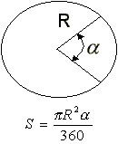
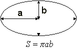

Objetivo:
Que apliques los conocimientos sobre funciones y procedimientos
en el desarrollo de un programa

Forma de trabajo:
Actividad individual

Instrucciones:
- De manera individual, desarrolla el algoritmo y posteriormente
el programa completo en C para cada uno de los ejercicios que se presentan
a continuación.
- Entrega, vía la plataforma, los archivos *.c que
contengan los programas en C. Es importante que al inicio de cada programa
coloques el o los algoritmos que utilizaste.
Ejercicio
1
Construye un programa completo en C libre de warnings
y errores, que incluya las siguientes funciones:
- La función kilosLibras que convierta la cantidad dada en
kilos a libras. Equivalencia 1 kg. = 2.2 lb.
El encabezado
de la función, podría ser el siguiente:
float kilosLibras (float kilos)
{
}
- La función
librasKilos que convierta
la cantidad dada en libras a kilos.
El encabezado
de la función, podría ser el siguiente:
float librasKilos
(float libras)
{
}
El encabezado
de la función, podría ser el siguiente:
float gramosOnzas
(float gramos)
{
}
- La función
onzasGramos que convierta
la cantidad en onzas a gramos.
El encabezado
de la función, podría ser el siguiente:
float onzasGramos (float onzas)
{
}
- El procedimiento unidadesPeso, que despliegue el siguiente menú en pantalla:
- Recuerda que la captura de datos y validación de valores
debe ser realizada en la sección del "main ( )", pues las funciones
NO pueden realizar las tareas de validación o captura de datos.
- Si se selecciona la opción S (Salir), el programa
deberá terminar su ejecución. (Utiliza la función _exit(0);
de la librería stdlib.h
- Nota que las opciones del menú son alfabéticas y
el usuario podrá seleccionar la opción del menú presionando
la letra mayúscula o minúscula correspondiente.
- Incluye el algoritmo como comentario al inicio del programa.
- Guarda el archivo con el nombre: O1_Matricula.c
Construye
un programa completo en C libre de warnings y errores, que incluya una función
para calcular la superficie de cada una de las
siguientes
figuras:
Sector
El encabezado
de la función, podría ser el siguiente:
float sector(float
radio, float angulo)
{
}

Elipse
El encabezado
de la función, podría ser el siguiente:
float elipse(float
a, float b)
{
}

Paralelogramo
El encabezado
de la función, podría ser el siguiente:
float paralelogramo(float
a, float h)
{
}

- El procedimiento superficies, que despliegue el siguiente menú en pantalla:
SUPERFICIES
PLANAS
1. Sector
2. Elipse
3. Paralelogramo
4. Salir
- En la sección del "main()" construya un programa
completo en C que utilice el procedimiento superficies para desplegar
el menú correspondiente y de acuerdo a la opción seleccionada
por el usuario utiliza la función apropiada de las implementadas anteriormente,
para calcular la equivalencias de las unidades de longitud.
Utiliza el estatuto de control Switch. En cada
caso del switch se debe llamar a la función correspondiente.
- Recuerda que la captura de datos y validación de valores
debe ser realizada en la sección del "main ( )", pues las
funciones NO pueden realizar las tareas de validación o captura de
datos.
- Si se selecciona la opción 4 (Salir), el programa
deberá terminar su ejecución. (Utiliza la función _exit(0);
de la librería stdlib.h
- Declara PI=3.141592 como constante global.
- Nota que las opciones del menú son numéricas.
- Incluye el algoritmo como comentario al inicio del programa.
.
- Guarda el archivo con el nombre O2_Matricula.c
.

Forma de entrega:
- Envía tu tarea por blackboard, no se aceptarán
tareas por ningún otro medio.
- Envía solo tus archivos *.c.
- Las tareas enviadas posteriormente a la fecha límite NO
SERÁN CALIFICADAS.
.
INSTRUCCIONES PARA ENVIAR TU TAREA
POR BLACKBOARD
- Haz clic en la actividad de Entrega de Tarea.
- Escribe comentarios si lo consideras necesario.
- Da clic en el botón de Browse My Computer y localiza
el archivo *.c. Si necesitas agregar más archivos repite este
proceso hasta agregar todos tus archivos.
- Haz clic en Submit.
- Al indicar que ha subido exitosamente hacer clic en OK.
. |